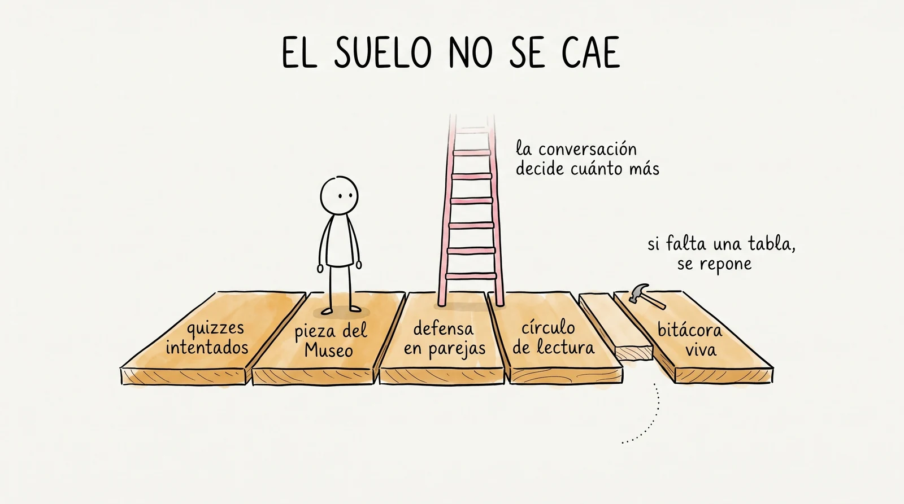

Se llena el fin de semana de la semana 7, con tu expediente y tu portafolio enfrente. Al terminar, transcribes solo la última página al formulario, desde tu celular. Este cuadernillo se queda contigo.
Llevas seis semanas en un curso donde nada tuvo calificación. Ni los quizzes, ni los ejercicios, ni tu primera pieza del Museo. Todo regresó con comentarios y con dos palabras: bien o aún no.
Pero la universidad pide tres calificaciones parciales y una final. Existen, hay que entregarlas, y esta es la primera. La diferencia con cualquier otra materia que hayas llevado es quién la escribe: la propones tú, con tu evidencia enfrente, y después se conversa.
Es la primera vez que lo haces, así que vale la pena decirlo claro: esto no es pedir una calificación. Es demostrar una. La diferencia está en la palabra "porque".
| Si el profesor… | Entonces… |
|---|---|
| coincide contigo | esa es tu calificación parcial y se asienta. Es lo que pasa la mayoría de las veces. |
| cree que te castigaste de más | la sube, y te dice por qué. Pasa más seguido de lo que crees: casi todos los estudiantes se ponen menos de lo que el profesor les pondría. |
| cree que es alta | hay una conversación de cinco minutos antes de asentar nada. La regla de la casa: ninguna calificación baja por escrito, solo en conversación, y con razones concretas de las dos partes. |
SÍ cuenta
NO cuenta
Aquí el error no cuesta. Lo único que cuesta es no estar.
El suelo es la lista de lo que debe existir al cerrar la unidad. No mide qué tan bien te salió: registra que estuviste y que lo hiciste. Quien llega al cierre con el suelo completo tiene una garantía: no reprueba. La conversación decide cuánto más.

¿Te falta algo? No repruebas en automático, y no hay que fingir que está. Anota aquí qué falta y cuándo lo vas a completar. Si no alcanza este semestre, se completa en la segunda vuelta de diciembre, que no es castigo: es la misma evaluación, en segunda oportunidad.
El suelo dice que estuviste. Las tres páginas que siguen dicen qué aprendiste. Son las que vas a usar para sostener tu número.
Cópiala de tu expediente. La columna de la izquierda es lo que apostaste antes de voltear la hoja; la de en medio, lo que salió. La tercera columna es la única que importa de verdad.
| Quiz | Aposté | Salió | La brecha (¿de más, de menos, exacta?) |
|---|---|---|---|
| #1 · semana 2 | |||
| #2 · semana 3 | |||
| #3 · semana 4 | |||
| #4 · semana 5 | |||
| #5 · semana 6 | |||
| Integrador · semana 7 |
| Si tu serie muestra… | Lo que dice de ti |
|---|---|
| las dos columnas acercándose | te estás conociendo mejor. Es exactamente lo que este curso entrena, y es un argumento de peso. |
| que apuestas de menos y sales mejor | sabes más de lo que crees. Súbele a tu medidor interno: eso también aplica a la calificación que estás por proponer. |
| que apuestas de más y sales peor | no es una falla moral, es información: te falta ver dónde se te escapa. Nombra el tema y ya tienes plan. |
| una brecha que no se mueve | llénalo con honestidad y tráelo a la conversación. Es un dato tan bueno como los otros. |
Un "aún no" reconocido y trabajado vale más que un "bien" de suerte. Esta casilla suma; dejarla vacía, no.
Junto a cada cosa que la unidad prometió enseñarte, anota la pieza concreta que lo demuestra: una hoja, una captura, una ficha, una entrada de bitácora, un momento de clase que el profesor vio. Si no encuentras evidencia de algo, escribe "aún no": es una respuesta legítima y muy útil.
| Al terminar la unidad 1, yo puedo… | Dónde nació | Mi evidencia |
|---|---|---|
| Desarmar una palabra en prefijo, raíz y sufijo, y nombrar cada pieza | S2 · Primeras disecciones | |
| Distinguir la definición del diccionario de la etimológica (las dos linternas) | S2 · Las dos linternas | |
| Escribir la suma de una palabra y leerla de vuelta | S3 · Sumas de palabras | |
| Distinguir un corte real de un espejismo, con la regla de oro | S3 · Torneo de matrices | |
| Leer una caja de medicina, una receta y mi propio horario | S4 · El botiquín griego | |
| Apostar el significado de una palabra y verificarlo en fuentes | S4 · Apuesta y verifica | |
| Sacar la familia entera de una raíz | S5 · La cadena de raíces | |
| Descifrar una palabra que nunca había visto | S6 · La prueba de fuego | |
| Armar una palabra nueva que se entienda, aunque no esté en el diccionario | S6 · Taller de descifrado | |
| Escribir la biografía de una palabra y presentar a su familia | S2 y S5 · Museo | |
| Defender mi trabajo en voz alta, con fuente y con honestidad | S7 · Defensa en parejas | |
| Leer por gusto y cosechar palabras de lo que leo | S7 · Círculo de lectura |
Del reactivo 8 del integrador. Cópiala aquí completa: es la evidencia más difícil de discutir que existe, porque no te la dio nadie.
De todo lo que produjiste en seis semanas, una cosa. No la más bonita: la que mejor muestra lo que sabes hacer ahora y no sabías en agosto.
Esta pregunta es la que convierte una pieza en argumento. Compárate contigo, no con el de junto.
Los cuatro criterios de la rúbrica pública. Márcate tú, antes de leer lo que anotó el profesor.
| Criterio | Bien | Aún no |
|---|---|---|
| La descomposición de mi palabra estaba correcta | ||
| Usé una fuente de autoridad y supe decir cuál | ||
| Expliqué por qué elegí esa palabra | ||
| Dije "esto no lo sé todavía" cuando fue el caso |
Recuerda lo que no se evalúa: que estés nervioso, que hables bonito, que memorices un discurso, cuántas palabras raras metiste.
Antes de mandar tu propuesta, ensáyala en voz alta con un compañero. No es un requisito ni lo revisa nadie: es el truco que hace que la conversación con el profesor no dé nervios, porque ya la tuviste una vez.
Cómo se juega. Se sientan dos. Uno lee las tres preguntas de abajo, tal cual, sin agregar nada. El otro contesta con su cuadernillo abierto. Cinco minutos. Luego se cambian.
Este renglón vale oro: es exactamente lo que hay que resolver antes del lunes.
Si el sistema te está dando ansiedad —y a algunas personas se la da la primera vez—, escríbelo aquí y dilo en la conversación. No es una queja: es información, y el sistema se ajusta contigo. Ese es el trato desde la semana 0.
Esta es la única página que se transcribe al formulario. Escríbela aquí primero, con calma, y luego cópiala desde el celular.
Se llena entre los dos, al terminar de conversar. Queda por escrito para que nadie lo recuerde distinto en diciembre.
| Mi propuesta | Lo que se asentó | Fecha |
|---|---|---|
Esta es la evaluación que te va a tocar toda la vida adulta: nadie te pone 8.5 en el trabajo, te preguntan qué hiciste y cómo lo sabes.
Guarda este cuadernillo dentro de tu portafolio. En la semana 12 vas a hacer esto otra vez, y lo primero que vas a querer es releer lo que escribiste hoy.